리눅스마스터-2급 (2012-09-10 기출문제)
1과목: 리눅스 운영 및 관리
1. 다음 설명하는 디렉터리로 알맞은 것은?
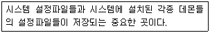
- /etc
- /boot
- /var
- /usr
(정답률: 84%)

2. 다음 중 사용자가 사용하고 있는 로그인 쉘을 변경하는 명령으로 알맞은 것은?
- bash
- csh
- tsch
- chsh
(정답률: 84%)
3. 다음 명령의 결과와 관련된 설명으로 틀린 것은?
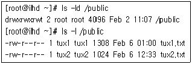
- tux1 계정은 /public 디렉토리내에 추가로 파일 생성이 가능하다.
- tux1 계정은 tux2.txt의 내용을 볼 수 없다.
- tux2 계정은 tux2.txt 파일을 삭제할 수 있다.
- tux3 계정이 /public 디렉토리내에 파일 생성이 가능하다.
(정답률: 64%)
4. 다음의 터미널 장치 파일에 아래의 명령을 실행 하였을 경우, ( 괄호 )에 들어갈 내용으로 알맞은 것은?
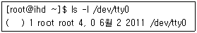
- brw-rw----
- crw-rw----
- drw-rw----
- lrw-rw----
(정답률: 42%)
5. /project 디렉터리에 대해 모든 사용자가 읽기, 쓰기, 실행 가능하며, /project 디렉터리에서 생성 되는 파일 및 디렉터리가 penguin 그룹소유로 되도록 설정할 때 알맞은 명령은?
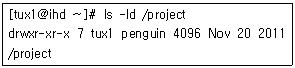
- chmod 2666 /project
- chmod 2777 /project
- chmod 4666 /project
- chmod 4777 /project
(정답률: 68%)
6. ( )은 파일 시스템의 디스크 사용 상태를 검색 하거나 quota 기록파일인 "quota.user"파일을 최근의 상태로 갱신하기 위해 사용된다. (괄호)에 들어갈 내용으로 알맞은 것은?
- quotalist
- repquota
- quoutaupdate
- quotacheck
(정답률: 52%)
7. 다음 중 파일 시스템 유지보수에 사용되는 fsck 명령의 옵션들이다. 옵션과 설명이 틀린 것은?
- -r : 파일 시스템을 수기하기 전에 확인을 요청
- -s : 파일 시스템을 점검하기 전에 슈퍼블럭을 나열
- -V : fsck의 버전정보를 출력한다.
- -A : /etc/fstab 파일로 가서 한번에 모든 파일을 점검하려고 시도
(정답률: 46%)
8. 다음 중 ext2 파일시스템의 inode에 저장되는 정보 항목이 틀린 것은?
- 디스크에서의 위치
- 권한
- 시간
- 마운트된 횟수
(정답률: 65%)
9. 다음 중 du 명령에서 사용자들이 알아보기 쉽도록 디스크의 크기를 KB, MB, GB 단위로 보려할 때 사용하는 옵션으로 알맞은 것은?
- -h
- -l
- -x
- -s
(정답률: 71%)
10. 다음 중 부팅시에 자동으로 파일시스템 점검하도록 설정할 때 참조되는 /etc/fstab의 필드 영역으로 알맞은 것은?
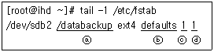
- ⓐ
- ⓑ
- ⓒ
- ⓓ
(정답률: 72%)
11. 리눅스에서 사용되는 쉘(shell)로 알맞는 것은?
- id
- wc
- tc
- csh
(정답률: 88%)
12. 다음 중 쉘이 자체적으로 처리하는 내부 명령에 해당하지 않는 것은?
- ls
- alias
- set
- cd
(정답률: 64%)
13. Bash 쉘에서 PATH 변수를 구분하는 것으로 알맞은 것은?
- 콜론(:)
- 세미콜론(;)
- 샾(#)
- 컴마(,)
(정답률: 81%)
14. bash 사용 중 바로 직전에 사용한 명령을 다시 실행하는 방법으로 틀린 것은?
- 윗방향 화살표키 (↑)를 누른 후 엔터 키를 누른다.
- 왼쪽방향 화살표키 (←)를 누른 후 엔터 키를 누른다.
- 명령행에 !! 입력 후 엔터 키를 누른다.
- 명령행에 !-1 입력 후 엔터 키를 누른다.
(정답률: 67%)
15. 다음 중 본인(사용자)의 홈 디렉토리를 확인 할 수 있는 방법으로 알맞은 것은?
- who
- pwd
- cd $HOME; pwd
- cat $HOME
(정답률: 43%)
16. bash 쉘에서 cp 명령어의 alias 적용 상태를 확인하는 방법이 틀린 것은?
- which cp
- alias -a
- alias
- alias cp
(정답률: 41%)
17. 사용자 계정의 로그인 쉘이 지정되어 있는 파일로 알맞은 것은?
- /etc/bashrc
- /etc/passwd
- /etc/shells
- /etc/rc.d
(정답률: 55%)
18. Bash 쉘의 환경변수로 틀린 것은?
- $SHELL
- $HOME
- $ROOT
- $PWD
(정답률: 64%)
19. 다음 중 kernel 이후 최초로 실행되는 프로세스로 알맞은 것은?
- kthread
- klogd
- syslogd
- init
(정답률: 87%)
20. 다음 중 부모 프로세스와 자식 프로세스 간의 상관관계를 쉽게 확인 할 수 있는 명령으로 알맞은 것은?
- kill
- pstree
- top
- nice
(정답률: 87%)
21. 프로세스를 백그라운드(Background)로 실행하기 위해서 사용되는 메타 문자로 알맞은 것은?
- $
- !
- *
- &
(정답률: 82%)
22. 다음 중 CTRL-\를 입력했을 때 보내어 지는 시그널로 알맞은 것은?
- HUP
- QUIT
- KILL
- CONT
(정답률: 47%)
23. 다음 중 시그널 이름과 의미가 틀린 것은?
- HUP - STOP이나 TSTP에 의해 정지된 프로세스가 다시 실행을 계속한다.
- SEGV - 허가되지 않은 메모리 영역에 접근 하였다.
- TSTP - 실행을 정지 후 다시 실행을 계속 하기 위하여 대기
- TERM – 가능한 한 정상 종료
(정답률: 45%)
24. 다음 중 리눅스에서 프로세스와 관련된 정보를 얻을 수 있는 명령으로 틀린 것은?
- top
- procscan
- pstree
- ps
(정답률: 71%)
25. 다음 중 시스템 정보를 확인 할 때 사용하는 top 명령의 설명 중 틀린 것은?
- 시스템 프로세스 확인
- 시스템 cpu 사용률 확인
- 시스템 메모리 사용률 확인
- 시스템 디스크 사용률 확인
(정답률: 73%)
26. 프로세서의 상태를 알아보는 ‘ps’ 명령을 통해 얻을 수 있는 상태정보 중 설명이 틀린 것은?
- Z : Zooming 상태
- R : 실행 중 혹은 실행될 수 있는 상태
- S : Sleep 상태
- T : Suspend 상태
(정답률: 67%)
27. 다음 중 프로세스 우선순위에 대한 설명 중 틀린 것은?
- 일반 사용자는 다른 사용자의 프로세스의 우선 순위를 변경할 수 없다.
- 일반적으로 프로세스 시작 시 부모 프로세스로 부터 우선순위를 물려받는다.
- 우선순위를 나타내는 값이 작을수록 높은 우선 순위를 갖는다.
- 프로세스 우선순위는 프로세스 실행 중에만 변경이 가능하다.
(정답률: 71%)
28. 다음 중 cron에 대한 설명으로 틀린 것은?
- cron은 일반유저도 사용가능하다.
- crontab 파일은 한 라인은 총 6개의 필드로 구성되어 있다.
- cron 수행 결과는 mail 유틸리티를 통해 사용자에게 전달된다.
- crontab 파일은 작성한 사용자의 환경설정을 상속받는다.
(정답률: 39%)
29. 리눅스에서 사용 가능한 에디터로 틀린 것은?
- editplus
- vi
- emacs
- pico
(정답률: 85%)
30. vi 편집기의 명령모드에서 입력모드로 전환하기 위해 사용되는 키(key)중 틀린 것은?
- I
- p
- o
- a
(정답률: 73%)
31. vi 에디터에서 문서 작성 “dd” 명령어의 설명으로 알맞은 것은?
- 현재 문서 전체 삭제
- 커서가 위치한 행 삭제
- 커서가 위치한 아래 행 삭제
- 커서가 위치한 아래 행 모두 삭제
(정답률: 82%)
32. 텍스트 편집기인 pico에서 편집을 종료하기 위해 사용되는 단축키로 알맞은 것은?
- <Ctrl + A>
- <Ctrl + E>
- <Ctrl + X>
- <Ctrl + O>
(정답률: 75%)
33. vi 에디터 사용 중에 http 라는 단어를 ftp 라는 단어로 모두 변경 할 경우 명령으로 알맞은 것은?
- :1,$s/http/ftp/d
- :1,$f\http\ftp\d
- :1,$s/http/ftp/g
- :1.$s\http\ftp\g
(정답률: 68%)
34. vi 에디터 사용 중에 G 명령어 수행으로 알맞은 것은?
- 작성중인 문서 맨 상단으로 커서 이동
- 작성중인 문서 맨 하단으로 커서 이동
- 작성중인 문서를 이전 문서로 돌림
- 작성중인 문서 자동 저장기능 활성화
(정답률: 59%)
35. 리눅스 프린터 작동에 관한 명령으로 틀린 것은?
- lprm
- lpc
- lps
- lpq
(정답률: 68%)
36. 설치된 모든 패키지 정보를 알고자 할 때 사용하는 명령어로 알맞은 것은?
- rpm -qq
- rpm -qa
- rpm -qs
- rpm –qo
(정답률: 84%)
37. 다음중 boy.tar.bz2 압축 파일을 풀기 위한 명령어로 알맞은 것은?
- unzip boy.tar.bz2
- tar -zxvf boy.tar.bz2
- tar -jxvf boy.tar.bz2
- tar -xxvf boy.tar.bz2
(정답률: 58%)
38. 다음 rpm --nodeps 옵션의 설명으로 알맞은 것은?
- 이미 설치된 rpm을 제거 한다
- 설치나 삭제 진행시 의존성을 무시하고 진행한다.
- 설치 진행 과정을 ‘#’으로 보여준다.
- 이미 설치된 rpm을 업그레이드 한다.
(정답률: 83%)
39. gzip의 압축률을 높이기 위한 명령으로 알맞은 것은?
- gzip -c
- gzip -h
- gzip -9
- gzip –1
(정답률: 61%)
40. tar 명령의 옵션에 대한 설명으로 틀린 것은?
- -c : 새로운 묶음파일 생성
- -v : 해당 작업을 자세히 보여줌
- -f : 파일명 지정
- -t : 묶음파일 풀기
(정답률: 70%)
41. 다음 중 패키지를 설치하는 명령으로 틀린 것은?
- rpm –evh
- rpm -Uvh
- rpm –ivh
- dpkg –i
(정답률: 60%)
42. debian 패키지의 --purge 옵션에 대한 설명으로 알맞은 것은?
- 패키지의 사용 방법에 대한 옵션
- 패키지의 유형을 알기 위한 명령 옵션
- 패키지의 제거를 위한 명령
- 어떤 패키지에서 취급하는지 알고자 하는 경우 사용되는 옵션
(정답률: 57%)
43. 다음 중 리눅스에서 프린터 프린터 큐에 대기중인 인쇄 작업을 삭제할 때 사용하는 명령으로 알맞은 것은?
- lpqrm
- lprm
- lpdel
- lpqchg
(정답률: 72%)
44. 다음 중 LPRng를 사용할 때 프린터 설정과 설치에 관련된 정보가 저장되는 파일로 알맞은 것은?
- printsetup
- printconf
- printcap
- printers
(정답률: 64%)
45. 다음 중 아래의 설명에서 ( 괄호 )에 알맞은 것은?
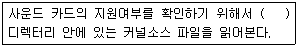
- /usr/share/linux/Documentation/sound
- /etc/share/linux/Documentation/sound
- /usr/src/linux/Documentation/sound
- /etc/src/linux/Documentation/sound
(정답률: 41%)
46. 다음 중 프린터 큐에 대한 설명으로 틀린 것은?
- 프린터에서 사용할 이름과 임시로 저장할 스풀 디렉터리로 사용한다.
- 프린트 도중 전원이 차단되는 경우 스풀링 되어 있는 파일은 즉시 삭제된다.
- 네트워크 공유 프린터의 점유 비율을 조절하기 위해 스풀 디렉터리의 용량을 조절한다.
- 프린터 명령을 실행했을 때 대기하고 있는 상태를 의미한다.
(정답률: 68%)
47. 다음 중 postscript 프린터에 대한 설명으로 틀린 것은?
- 계단 현상 같은 것이 없는 고해상도의 출력물을 얻을 수 있다.
- 드라이버는 상용 제품이기 때문에 구입, 설치의 과정이 필요하다.
- 포스트스크립트 프린터를 사용하기 위해서는 포스트스크립트 프린터용 드라이버가 설치 되어야 한다.
- 포스트스크립트는 Adobe 사에서 만든 프린터 전용 스크립트 언어이다.
(정답률: 58%)
48. 다음 중 프린터 lp0를 이용하여 ihd.txt 파일을 인쇄하려고 할 때 명령으로 틀린 것은?
- lpr -#10 > ihd.txt
- cat ihd.txt > /dev/lp0
- pr ihd.txt | lpr
- cat ihd.txt | lpr
(정답률: 38%)
2과목: 리눅스 활용
49. 다음 중 X 윈도우 시스템에 대한 설명으로 틀린 것은?
- 네트워크 기반의 그래픽 환경이다.
- 디스플레이 장치에 의존적이다.
- 사용자가 원하는 모양의 인터페이스를 만들 수 있다.
- 서로 다른 이 기종을 함께 사용할 수 있다.
(정답률: 60%)
50. 텍스트 모드로 부팅되는 리눅스 시스템을 X윈도우로 부팅되도록 변경하고자 할 때 수정한 파일로 알맞은 것은?
- /etc/fstab
- /etc/inittab
- /etc/X11/XF86Config
- /etc/X11/xorg.conf
(정답률: 66%)
51. 다음 중 ( 괄호 )안에 들어갈 내용으로 알맞은 것은?
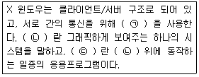
- (ㄱ) X 프로토콜 - (ㄴ) X 클라이언트 - (ㄷ) X 서버
- (ㄱ) X 프로토콜 - (ㄴ) X 서버 - (ㄷ) X 클라이언트
- (ㄱ) X lib - (ㄴ) X 클라이언트 - (ㄷ) X 서버
- (ㄱ) X lib - (ㄴ) X 서버 - (ㄷ) X 클라이언트
(정답률: 54%)
52. 다음 ( 괄호 )안에 들어갈 내용은 무엇인가?
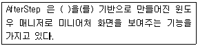
- Enlightenment
- 윈도우 메이커
- mwm
- fvwm
(정답률: 43%)
53. 다음 중 포토 리터칭, 이미지 합성, 이미지 제작을 위해 사용되는 리눅스용 저작도구로 알맞은 것은?
- GIMP
- MTV
- XMMS
- Real Player
(정답률: 78%)
54. 다음 중 GNOME과 가장 관련이 깊은 라이브러리로 알맞은 것은?
- Qt
- Motif
- Xaw
- GTK+
(정답률: 73%)
55. 다음 중 X 윈도우를 강제 종료하기 위한 조합키로 알맞은 것은?
- Ctrl + Alt + F1
- Ctrl + Alt + F7
- Ctrl + Alt + Esc
- Ctrl + Alt + BackSpace
(정답률: 70%)
56. 다음 중 윈도우 매니저의 종류로 틀린 것은?
- fvwm
- twm
- xdm
- mwm
(정답률: 53%)
57. 중앙에 위치한 컴퓨터가 각 컴퓨터와 통신하는 방식으로 중앙의 제어기(허브 또는 교환기)를 중심으로 모든 기기는 포인트 투 포인트 형태로 연결하는 통신망 구조 중 알맞은 것은?
- 스타 토폴로지
- 버스 토폴로지
- 링 토폴로지
- 망(Mesh) 토폴로지
(정답률: 71%)
58. 다음 중 각 클라이언트의 통신회선의 사용 여부를 반송파를 통해 진단한 후 패킷을 전송하여 동시에 사용할 때 발생할 수 있는 충돌을 막아주는 프로토콜로 알맞은 것은?
- CSMA
- IPX
- FDDI
- NetBEUI
(정답률: 71%)
59. 다음 회선 교환 방식에 대한 설명으로 틀린 것은?
- 송신측과 수신측을 연결하는 데 유동적인 회선을 통하는 방식이다.
- 송신측과 수신측이 연결되면 그 회선은 다른 사람이 쓸 수 없다.
- 초기 전화시스템이 회선 교환 방식의 대표적인 예이다.
- 호출 후에는 오버헤드 비트가 없다.
(정답률: 47%)
60. 다음 중 ISO(International Standards Organization)에서 담당하는 업무로 알맞은 것은?
- IP와 도메인
- 전기 전송 표준
- OSI 프로토콜
- LAN의 접속규격과 처리에 대한 표준
(정답률: 71%)
61. 컴퓨터 네트워크에서 서로 다른 통신망, 프로토콜을 사용하는 네트워크 간의 통신을 가능하게 하는 장치로 일종의 입구역할을 하는 것으로 알맞은 것은?
- 라우터
- 리피터
- 브리지
- 게이트웨이
(정답률: 65%)
62. 다음은 OSI 7계층을 하위 계층부터 상위 계층으로 나열한 것이다. ( 괄호 )안에 들어갈 내용으로 알맞은 것은?
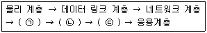
- (ㄱ) 표현계층 - (ㄴ) 전송계층 - (ㄷ) 세션계층
- (ㄱ) 표현계층 - (ㄴ) 세션계층 - (ㄷ) 전송계층
- (ㄱ) 전송계층 - (ㄴ) 세션계층 - (ㄷ) 표현계층
- (ㄱ) 전송계층 - (ㄴ) 표현계층 - (ㄷ) 세션계층
(정답률: 74%)
63. 다음 중 TCP와 UDP 프로토콜에 대한 설명으로 알맞은 것은?
- TCP는 UDP와 비교했을 때 전송 속도가 빠르고, 부하가 걸리지 않는다.
- UDP는 end-to-end 에러탐지와 수정기능을 가지고 있다.
- UDP는 데이터가 올바른 순서로 전달되었는지 확인해준다.
- TCP는 접속기반의 바이트 스트림(byte-stream) 프로토콜이다.
(정답률: 65%)
64. 다음 ( 괄호 )안에 들어갈 내용으로 알맞은 것은?
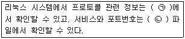
- (ㄱ) /etc/protocol - (ㄴ) /etc/service
- (ㄱ) /etc/protocols - (ㄴ) /etc/service
- (ㄱ) /etc/protocol - (ㄴ) /etc/services
- (ㄱ) /etc/protocols - (ㄴ) /etc/services
(정답률: 50%)
65. 다음 중 B 클래스 네트워크에 속한 IP주소로 알맞은 것은?
- 10.10.10.2
- 127.10.10.125
- 191.155.140.122
- 192.168.33.12
(정답률: 65%)
66. 다음 프로토콜의 기본 기능에 대한 설명 중 ( 괄호 )에 들어갈 내용으로 알맞은 것은?
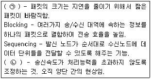
- (ㄱ) Error Control, (ㄴ) Interrupt
- (ㄱ) Segmentation, (ㄴ) Interrupt
- (ㄱ) Error Control, (ㄴ) Flow Control
- (ㄱ) Segmentation, (ㄴ) Flow Control
(정답률: 67%)
67. 다음 중 리눅스에서 사용할 수 있는 웹 브라우저로 틀린 것은?
- Firefox
- Opera
- Safari
- Mozilla
(정답률: 57%)
68. 다음 ( 괄호 )안에 들어갈 내용으로 알맞은 것은?
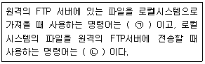
- (ㄱ) get - (ㄴ) put
- (ㄱ) put - (ㄴ) get
- (ㄱ) cp - (ㄴ) mv
- (ㄱ) mv - (ㄴ) cp
(정답률: 80%)
69. 다음 중 IRC에 대한 설명으로 알맞은 것은?
- 공통의 주제별로 모여 정보를 나누고 토론하는 자유게시판 서비스이다.
- 인터넷상에서 채팅을 즐길 수 있게 해주는 서비스이다.
- 인터넷 회선을 이용하야 음성을 전달하는 서비스이다.
- 인터넷에 연결된 원격 호스트에 접속할 수 있도록 도와주는 서비스이다.
(정답률: 66%)
70. 다음 중 모뎀과 전화선을 이용하여 인터넷을 이용할 경우 가장 관계가 깊은 프로토콜로 알맞은 것은?
- POP3
- DHCP
- ICMP
- SLIP
(정답률: 51%)
71. 리눅스 인터페이스 중 loopback interface에 할당되는 디바이스 이름으로 알맞은 것은?
- eth0
- virbr0
- lo
- ppp0
(정답률: 71%)
72. 다음 중 ifconfig 명령에 대한 설명으로 틀린 것은?
- 네트워크 인터페이스의 IP주소, 넷마스크값, 브로드캐스트 주소를 설정한다.
- 네트워크 인터페이스를 활성화 또는 비활성화 시킨다.
- 네트워크 인터페이스의 DNS 값을 설정한다.
- 네트워크 인터페이스의 맥 주소(Mac Address)를 변경한다.
(정답률: 46%)
73. 다음 중 시스템에 설정된 게이트웨이 주소값을 확인할 때 사용하는 명령어로 알맞은 것은?
- ifconfig
- ipconfig
- route
- ping
(정답률: 64%)
74. exam.ihd.or.kr 도메인의 IP주소를 조회하려고 할 때 알맞은 명령어는?
- ifconfig
- netstat
- nslookup
- ping
(정답률: 66%)
75. 다음은 설정된 DNS 서버 주소를 확인하는 내용이다. ( 괄호 )안에 들어갈 내용으로 알맞은 것은?
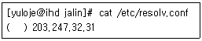
- ns
- dns
- domain
- nameserver
(정답률: 61%)
76. 레드햇 계열의 리눅스 시스템에서 부팅시 첫 번째 이더넷 카드에 할당되는 IP주소를 확인 할 수 있는 파일로 알맞은 것은?
- /etc/ifcfg-eth0
- /etc/sysconfig/ifcfg-eth0
- /etc/sysconfig/network-scripts/ifcfg-eth0
- /etc/sysconfig/networking/ifcfg-eth0
(정답률: 65%)
77. 첫번째 이더넷카드에 IP주소를 설정하려고 할 때 ( 괄호 )에 들어갈 내용으로 알맞은 것은?
- eth0 – subnet
- eth0 - netmask
- dev – netmask
- dev0 - subnet
(정답률: 71%)
78. 다음 설명으로 알맞은 것은?
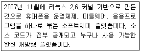
- iOS
- 안드로이드
- 심비안
- 블랙베리
(정답률: 73%)
79. 다음에서 설명하는 리눅스 기반 공개형 서버 가상화 기술로 알맞은 것은?
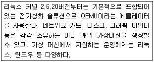
- Xen
- KVM
- VirtualBox
- VMware
(정답률: 34%)
80. 다음의 환경에 적합한 클라우드 컴퓨팅 서비스로 알맞은 것은?
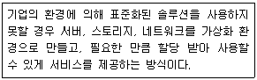
- IaaS(Infrastructure as a Service)
- PaaS(Platform as a Service)
- SaaS(Software as a Service)
- DaaS(Database as a Service)
(정답률: 57%)